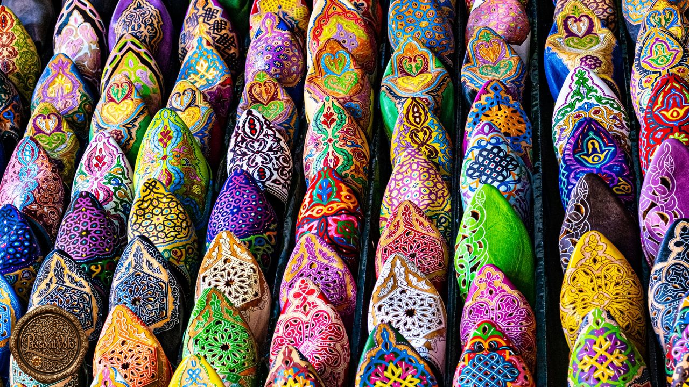
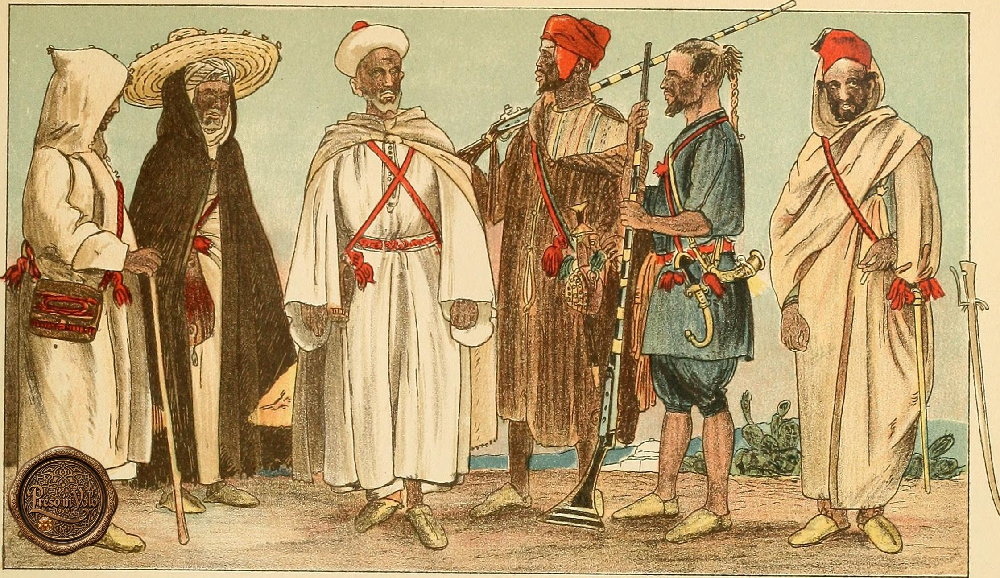
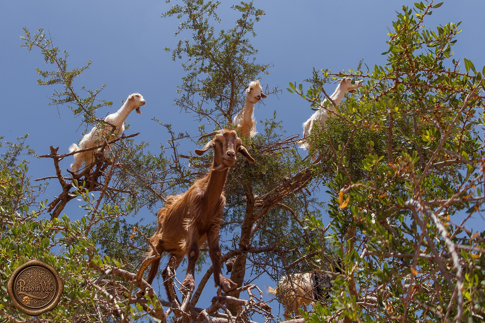
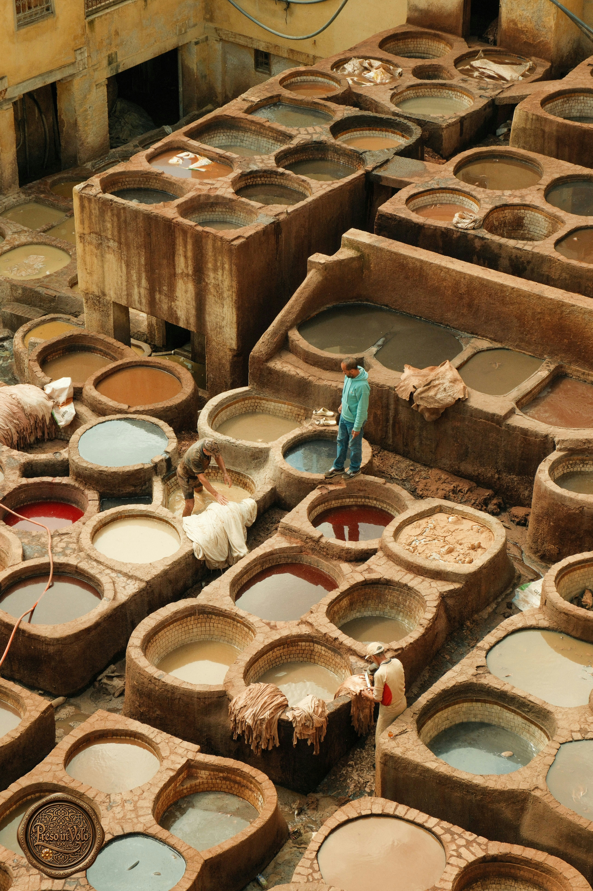
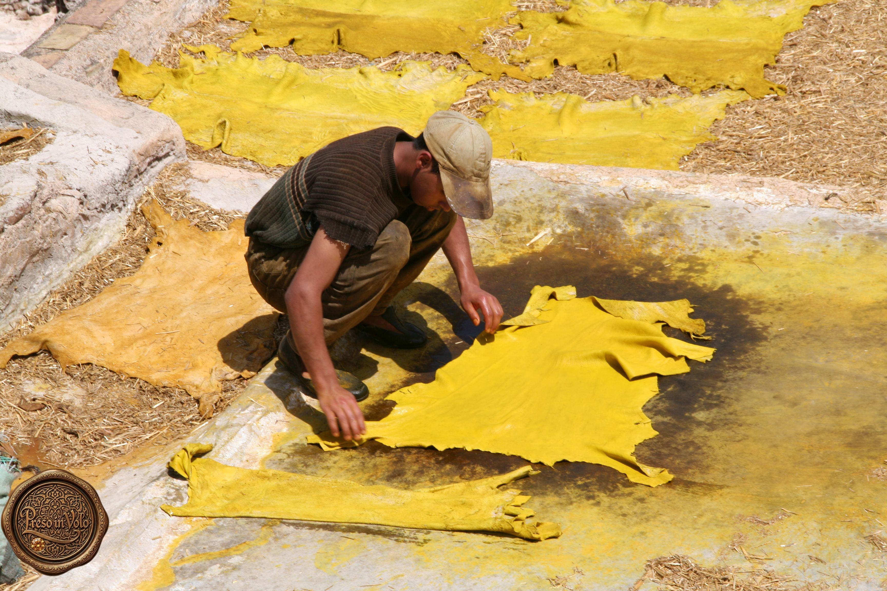
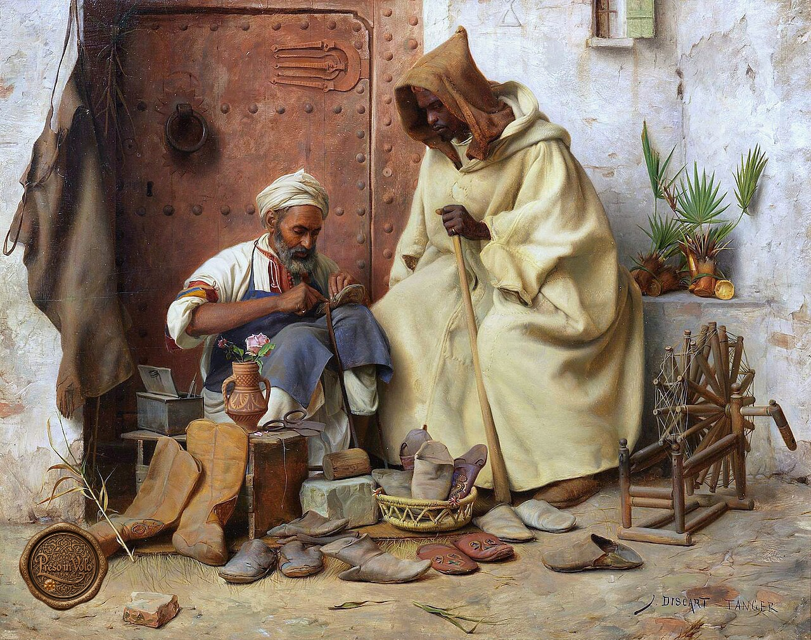
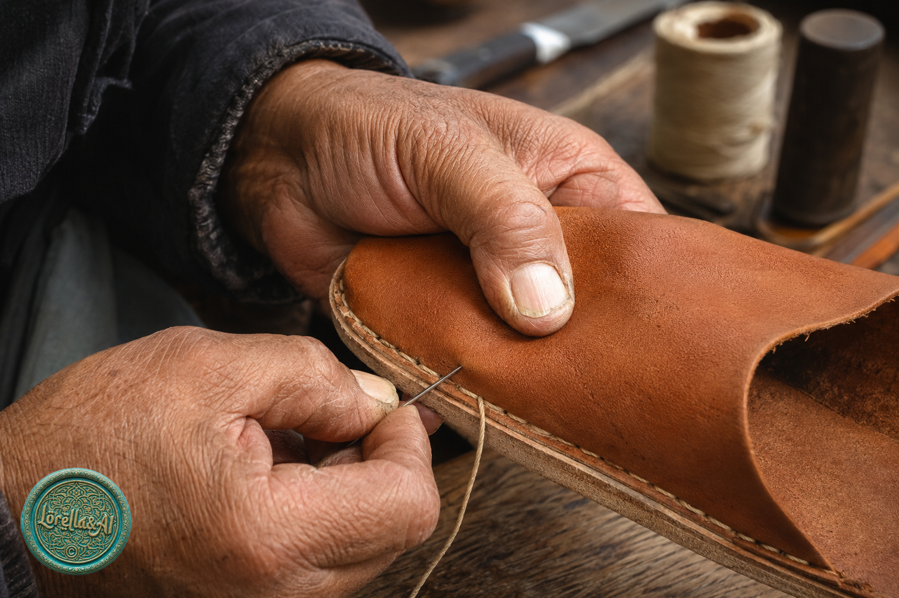
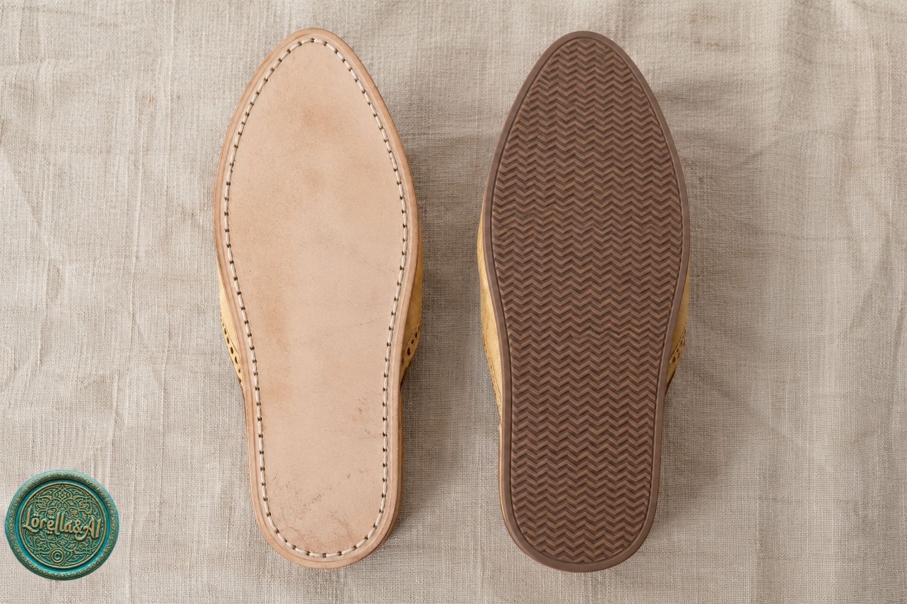
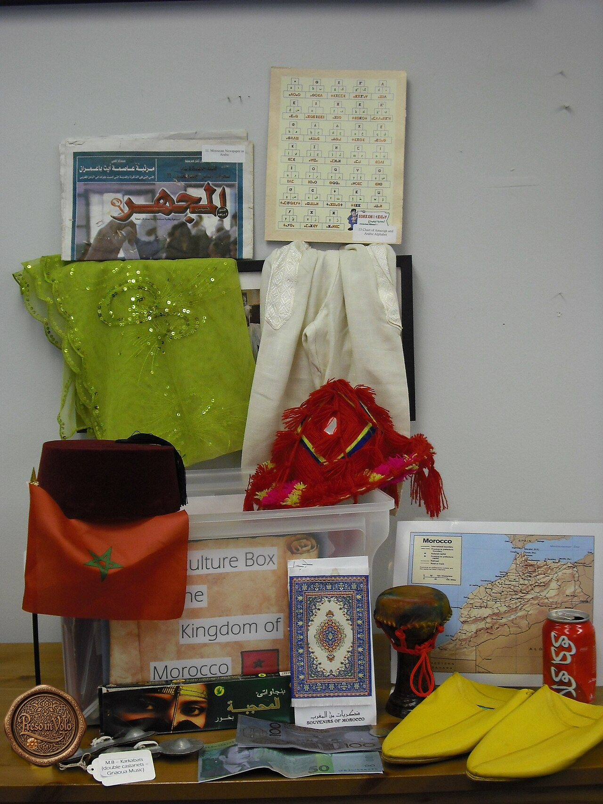
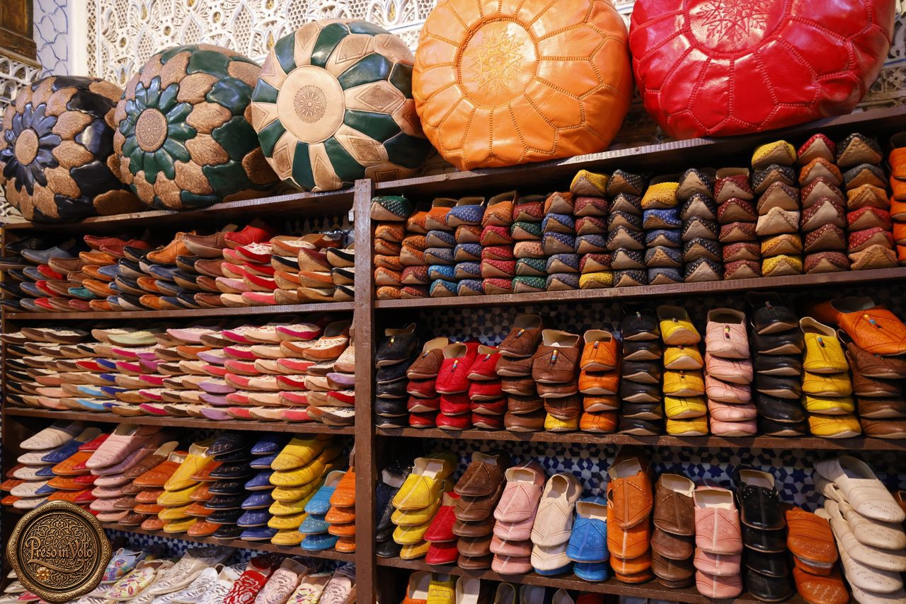

La musica ti accompagna
Avvolgiti nell’atmosfera del Marocco.
Col Marocco, passo dopo passo
Il viaggio segreto delle babbucce, dai pascoli alle botteghe del souk

Una pantofola? Non proprio
Babbucce. È un termine che conosciamo tutti.
Per noi italiani richiama immediatamente le pantofole: morbide, leggere e destinate soprattutto alla casa. Eppure, in molte terre affacciate sul Mediterraneo e oltre, quella che chiamiamo babbuccia non è affatto una semplice pantofola.
È una vera calzatura.
Da secoli accompagna uomini e donne nelle abitazioni, nelle strade, nei mercati e nelle occasioni importanti. In Marocco si chiama balgha e può essere sobria oppure ricamata, di pelle naturale o accesa di colori, con la punta arrotondata oppure lunga e leggermente rivolta verso l’alto.

A prima vista, questa tavola sembra volerci mostrare la varietà dei costumi marocchini. Cambiano le tuniche, i mantelli, i copricapi, i colori e il modo di avvolgere i tessuti intorno al corpo. Ogni figura appare diversa dall’altra.
Ma proviamo ad abbassare lo sguardo.
Ai piedi indossano tutti la stessa calzatura.
Mentre gli abiti distinguono, le balgha uniscono. Attraversano differenze, condizioni e appartenenze come un elemento silenzioso di coesione popolare. Non impongono un’uniforme, ma offrono una forma comune dentro la diversità.
La tavola racconta molti costumi. E una sola, ostinata babbuccia.

E quel filo comune non si ferma alle strade o ai mercati. Nelle grandi celebrazioni ufficiali, il re e i dignitari indossano abiti chiari, il tarbouche rosso e balgha rigorosamente gialle. La calzatura che nella tavola attraversava la varietà dei costumi ricompare così anche nel linguaggio solenne della monarchia.

Dai piedi del popolo a quelli del re, la balgha è uno dei segni nei quali il Marocco si riconosce.
Ma perché alcune terminano proprio con quella punta lunga e leggermente rivolta verso l’alto?
Forse serviva a proteggere le dita. Forse facilitava il passo sotto abiti lunghi. Forse, a un certo punto, fu semplicemente il gusto a trasformarla in un segno di eleganza. Calzature con punte allungate o ricurve sono comparse in epoche e culture molto lontane tra loro. Eppure, la ragione originaria di quella forma non è stata ancora stabilita con certezza.
La babbuccia conserva dunque un piccolo mistero. Ma è la sua stessa parola a indicarci la prima strada da seguire.
Il suo nome cominciò il viaggio molto più a Oriente del Marocco. Viene dal persiano pā-pūš: pā significa “piede” e pūš significa “ciò che copre”.
Copripiede
Dal persiano passò nelle lingue dell’Impero ottomano e nel mondo arabo. Divenne pabuç in turco, bābūš in arabo, babouche in francese e infine babbuccia in italiano. Prima ancora di essere indossata, aveva già attraversato popoli, lingue e confini.
Ora che conosciamo il viaggio della parola, possiamo seguire quello della calzatura. Per farlo dobbiamo lasciare per un momento le botteghe e tornare là dove ogni storia materiale ha inizio: la terra.
Tra i rami dell’argan

Nel Marocco sud-occidentale esistono alberi capaci di resistere alla siccità, al caldo e a terreni avari di acqua.
Sono gli alberi di argan, con i loro tronchi nodosi, i rami spinosi e radici tanto profonde da contribuire a trattenere il terreno e a contrastare l’avanzata del deserto.
Tra quei rami accade qualcosa che, a chi lo vede per la prima volta, sembra quasi inventato: le capre si arrampicano sugli alberi.
Non hanno bisogno di un tappeto volante. Con l’agilità di acrobate raggiungono le foglie e i frutti che crescono più in alto. Quando il pascolo a terra scarseggia, la chioma dell’albero di argan diventa una mensa sospesa tra cielo e terra.
Per le comunità pastorali, capre e pecore non erano soltanto animali allevati. Rappresentavano latte, nutrimento, lavoro, possibilità di scambio e una forma di sicurezza davanti a stagioni e raccolti incerti.
In un’economia fondata sulla necessità, ogni risorsa possedeva un valore e nulla di ciò che era già destinato all’alimentazione veniva sprecato. Anche le pelli entravano così in una nuova catena di mestieri e di scambi.
Potevano essere vendute nei mercati settimanali, scambiate con altri beni oppure affidate a commercianti capaci di trasportarle verso i centri urbani.
Lasciamo dunque le caprette a brucare tranquille tra i rami e seguiamo soltanto una pelle già entrata nel circuito del mercato.
Forse viaggiò sul dorso di un mulo. Forse cambiò più volte proprietario. Forse attraversò villaggi, pianure e porte cittadine prima di raggiungere la medina.
Non conosciamo il suo itinerario preciso, ma sappiamo quale luogo l’attendeva.
Le concerie di Fès.
Lì la pelle avrebbe perduto la rigidità della materia grezza. Acqua, sostanze concianti, pigmenti e mani esperte l’avrebbero trasformata in un materiale morbido, resistente e capace di trattenere il colore.
La babbuccia non era ancora nata. Ma aveva già cominciato a viaggiare.
La città che cambia la pelle

A Fès, la pelle non arriva in silenzio.
Entra nella medina insieme alle voci dei mercanti, al passo degli animali da soma e al rumore delle botteghe. Attraversa vicoli tanto stretti che, a volte, il cielo sembra ridursi a una striscia azzurra sospesa sopra i tetti.
Poi è l’odore ad annunciare la destinazione.
Prima ancora di vedere le vasche, il visitatore comprende di essere vicino alle concerie. Non a caso, sulle terrazze che si affacciano su Chouara, viene spesso offerto un rametto di menta da avvicinare al naso.
Quando finalmente il cortile appare, sembra una gigantesca tavolozza sprofondata nella città. Vasche rotonde e rettangolari si stringono una accanto all’altra. Alcune contengono liquidi chiari, altre custodiscono rossi, gialli, bruni e azzurri. Tra una vasca e l’altra si muovono gli uomini, in equilibrio su bordi stretti e consumati dal tempo.
Chouara è la più grande tra le concerie storiche di Fès. La tradizione la fa risalire ai primi secoli della città, anche se la sua data precisa rimane incerta. Ciò che sappiamo è che la lavorazione della pelle fu molto presto una parte importante dell’economia della medina.
Qui la nostra pelle comincia a dimenticare ciò che era.
Viene immersa in una successione di bagni destinati a pulirla, liberarla dai residui e renderla più morbida. Acqua, calce, sale e sostanze organiche partecipano a una trasformazione lenta, faticosa e tutt’altro che profumata.
Poi arriva il colore. La pelle viene immersa, sollevata, rivoltata e lavorata affinché la tintura raggiunga ogni parte. I procedimenti tradizionali hanno utilizzato sostanze naturali, anche se oggi tecniche antiche e materiali moderni possono convivere nello stesso mondo artigiano.
Quella che dalle terrazze appare come una meravigliosa composizione cromatica è, vista da vicino, un luogo di grande fatica. I conciatori lavorano a contatto con acqua e sostanze aggressive, esposti al sole, agli odori e ai rischi di un mestiere duro.
Chouara non è un fondale costruito per i turisti. È ancora un luogo di produzione.

Quando il colore ha terminato il proprio lavoro, le pelli vengono distese e lasciate asciugare. Al sole di Fès, il giallo sembra quasi accendersi.
Forse proprio una di quelle pelli, ormai morbida e luminosa, verrà scelta per una balgha tradizionale. Ma prima dovrà lasciare le vasche e incontrare un altro artigiano.
Il conciatore le ha dato resistenza e colore. Adesso tocca al calzolaio darle una forma e insegnarle a camminare.
L’uomo che le insegna a camminare

La pelle lascia le concerie senza sapere ancora che cosa diventerà.
Potrebbe trasformarsi in una borsa, una cintura, un pouf oppure nella copertina di un libro. La nostra, invece, continua il viaggio verso la bottega di un calzolaio.
A Tangeri, tra la fine dell’Ottocento e l’inizio del Novecento, il pittore Jean-Baptiste Discart immaginò proprio una di queste botteghe.
Il calzolaio lavora seduto davanti alla porta. Intorno a lui non esistono vetrine né scaffali ordinati: le calzature sono adagiate a terra, accanto alle pelli, agli utensili e alle forme utilizzate per modellarle. Il cliente attende in piedi, avvolto nella propria djellaba, mentre le mani dell’artigiano continuano pazientemente il lavoro.
Discart era un pittore orientalista europeo e il suo quadro non è una fotografia documentaria. Eppure, nella cura quasi minuziosa degli oggetti, ci permette di entrare per un momento in una bottega tangerina di oltre un secolo fa.
La scena sembra immobile, ma quelle mani stanno dando inizio a una trasformazione.
Il calzolaio osserva la pelle e ne cerca la parte migliore. Deve riconoscerne la direzione, lo spessore e le eventuali imperfezioni. Poi appoggia le sagome e traccia le forme che diventeranno la tomaia, il rivestimento interno e la suola.
Ogni taglio richiede attenzione: ciò che viene eliminato non può più essere ricucito. I pezzi separati cominciano lentamente a riconoscersi. Uno proteggerà la pianta del piede. Un altro lo avvolgerà. Un altro ancora formerà la punta.

Poi entrano in scena ago e filo.
Nei modelli artigianali, la tomaia viene unita alla suola attraverso una successione di punti eseguiti a mano. Il filo attraversa la pelle, torna indietro e la stringe senza lacerarla.
I punti devono essere solidi, ma non sembrano prodotti da una macchina. Se osservati da vicino, possono mostrare minime differenze nella distanza e nella tensione: piccole tracce lasciate dal ritmo della mano.
È in quel momento che la pelle smette di essere soltanto pelle.
Ha finalmente un davanti e un dietro, un interno e un esterno. Possiede una punta, una suola e uno spazio destinato ad accogliere il piede.
Il conciatore le aveva dato morbidezza e colore. Il calzolaio le ha dato una forma.
Ma prima di raggiungere la bottega del souk, alla nostra babbuccia manca ancora qualcosa: deve scegliere quale volto mostrare al mondo. Sobrio o ricamato, naturale o coloratissimo, rotondo oppure appuntito.
Come ogni viaggiatrice, deve decidere che cosa indossare.
L’abito fa la babbuccia
La babbuccia è pronta, ma non tutte le strade chiedono la stessa scarpa.
Prima di mostrarci il colore e i ricami, capovolgiamola per un istante. Anche la parte che nessuno guarda racconta qualcosa.

Nelle lavorazioni più tradizionali, la suola può essere composta da strati di pelle tagliati, sovrapposti e cuciti. È morbida e accompagna il piede, ma porta inevitabilmente i segni del terreno sul quale cammina.
Nei modelli contemporanei può comparire invece una suola di gomma, più adatta all’asfalto, all’umidità e alle esigenze di chi indossa la babbuccia anche lontano dal souk.
Una suola racconta il mondo nel quale la calzatura è nata. L’altra racconta il mondo nel quale ha imparato a continuare a vivere.
Ora possiamo rigirarla.

Il giallo è uno dei volti più riconoscibili della balgha marocchina. Sulla pelle liscia, il colore sembra raccogliere la luce e trattenerla. La linea è essenziale, la decorazione quasi assente e la punta leggermente affusolata.
Non ha bisogno di ricami per farsi notare.
Ma basta spostarsi da una bottega all’altra perché la stessa calzatura cambi completamente carattere. Il giallo lascia posto al rosso, al verde, al blu e al viola. La pelle può essere traforata, intrecciata o ricoperta di fili colorati. Compaiono motivi geometrici, fiori, perline e piccoli dettagli metallici.
Alcune babbucce sembrano nate per accompagnare i passi di ogni giorno. Altre hanno tutta l’aria di essersi preparate per una festa.
La punta può essere affusolata oppure arrotondata. Il tallone può restare scoperto oppure essere leggermente rialzato. La forma tradizionale può conservarsi quasi intatta o incontrare il gusto contemporaneo.
La babbuccia non possiede dunque un unico volto. È sobria e vivacissima, antica e moderna, quotidiana ed elegante. Cambia secondo la mano che la realizza, il luogo in cui viene venduta e la persona che la sceglierà.

Ed eccola finalmente nel souk.
Dopo i pascoli, i mercati, le concerie e la bottega del calzolaio, il suo viaggio sembra essere terminato. Le babbucce riempiono gli scaffali, pendono dalle pareti e si dispongono una accanto all’altra in un mosaico di forme e colori.
Ora attendono.
Qualcuno le osserverà, le toccherà e forse ne proverà più di un paio. Qualcun altro sceglierà proprio quella gialla, semplice e luminosa. Un viaggiatore le porterà in valigia oltre il Mediterraneo e, una volta tornato a casa, continuerà a chiamarle pantofole.
Ma noi ormai conosciamo il loro segreto.
Prima di arrivare ai nostri piedi, le babbucce avevano già percorso molta strada.
La storia attraversa le lingue
Le immagini appartengono al racconto italiano. Qui il viaggio continua in inglese e in spagnolo.
English
A slipper? Not quite
Babouches. The word may make us think of soft house slippers, yet in Morocco they are proper shoes called balgha: plain or embroidered, naturally coloured or vivid, rounded or ending in a long, slightly upturned toe.
A 1905 costume plate appears to celebrate differences in robes, cloaks, headwear and colour. But look down: the figures are wearing the same shoes. While clothing distinguishes them, the balgha connects them—an understated element of popular cohesion, a shared form within diversity. The same thread reaches official ceremonies, where the king and dignitaries wear light garments, a red tarboosh and yellow balgha.
The word began its journey farther east. Persian pā-pūš means “foot-cover”. It travelled through Ottoman and Arab lands, becoming Turkish pabuç, Arabic bābūš, French babouche and Italian babbuccia.
Among the argan branches
In south-western Morocco, goats climb argan trees to reach leaves and fruit when grazing is scarce. For pastoral communities, goats and sheep meant nourishment, work, trade and security. In an economy of necessity, hides too entered a chain of crafts and exchanges. We leave the goats grazing peacefully and follow only a hide already on its way to Fez.
The city that changes the hide
In Fez, smell announces the tanneries before the vats appear. Chouara opens below the terraces like a palette sunk into the city. Hides are cleaned and softened through successive baths, then immersed, lifted and turned until colour reaches every part. What looks magnificent from above is, close up, a place of hard labour and still a place of production.
The man who teaches it to walk
The shoemaker studies the leather, lays down patterns and cuts the upper, lining and sole. Needle and thread join the pieces. Tiny variations reveal the rhythm of the hand. At that moment leather stops being merely leather: the tanner gave it softness and colour; the shoemaker gave it form.
The babouche wears its finest
One sole tells of the world in which the shoe was born; another, made for modern streets, of the world in which it learned to survive. Yellow is among the most recognisable faces of the balgha, yet the souk offers red, green, blue and violet, embroidery, beads and metal details. Before reaching our feet, the babouches had already travelled a very long way.
Español
¿Una zapatilla? No exactamente
Babuchas. La palabra puede hacernos pensar en unas zapatillas de casa, pero en Marruecos son verdaderos zapatos llamados balgha: sobrios o bordados, de piel natural o llenos de color, redondeados o terminados en una punta larga y ligeramente curvada.
Una lámina de 1905 parece celebrar las diferencias entre túnicas, mantos, tocados y colores. Pero bajemos la mirada: las figuras llevan el mismo calzado. Mientras la ropa las distingue, la balgha las une como un discreto elemento de cohesión popular. El mismo hilo llega a las ceremonias oficiales, donde el rey y los dignatarios visten prendas claras, tarbush rojo y balgha amarillas.
La palabra comenzó su viaje mucho más al este. El persa pā-pūš significa “cubrepie”. Atravesó el mundo otomano y árabe y se convirtió en el turco pabuç, el árabe bābūš, el francés babouche y el italiano babbuccia.
Entre las ramas del argán
En el suroeste de Marruecos, las cabras trepan a los arganes para alcanzar hojas y frutos cuando escasea el pasto. Para las comunidades pastoriles, cabras y ovejas significaban alimento, trabajo, intercambio y seguridad. También las pieles entraban en una cadena de oficios. Dejamos a las cabras pastando tranquilamente y seguimos una piel que viaja hacia Fez.
La ciudad que cambia la piel
En Fez, el olor anuncia las curtidurías antes de que aparezcan las cubas. Chouara se abre bajo las terrazas como una paleta hundida en la ciudad. Las pieles se limpian, se ablandan y se sumergen hasta que el color alcanza cada parte. Lo que desde arriba parece magnífico es, de cerca, un lugar de enorme esfuerzo y todavía un lugar de producción.
El hombre que le enseña a caminar
El zapatero estudia la piel, coloca los patrones y corta el empeine, el forro y la suela. Después, la aguja y el hilo unen las piezas. Las pequeñas diferencias revelan el ritmo de la mano. En ese momento la piel deja de ser solamente piel: el curtidor le dio suavidad y color; el zapatero le dio forma.
El hábito hace a la babucha
Una suela cuenta el mundo en el que nació el calzado; otra, creada para las calles modernas, el mundo en el que aprendió a sobrevivir. El amarillo es uno de los rostros más reconocibles de la balgha, pero el zoco ofrece rojo, verde, azul y violeta, bordados, cuentas y detalles metálicos. Antes de alcanzar nuestros pies, las babuchas ya habían recorrido un largo camino.
✨ Questo racconto sta preparando un nuovo viaggio sul Tappeto Volante…
Il sigillo verde identifica le ricostruzioni AI. Il sigillo bronzo indica immagini provenienti da altre fonti, citate nelle didascalie.